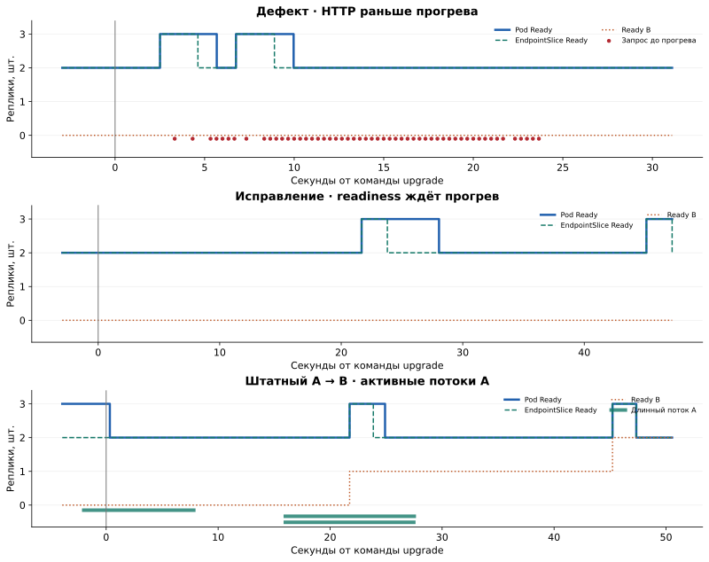
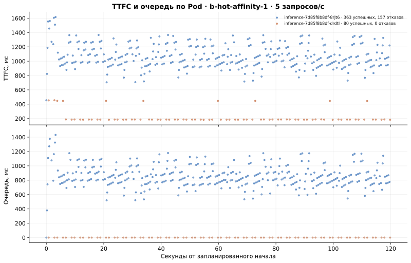
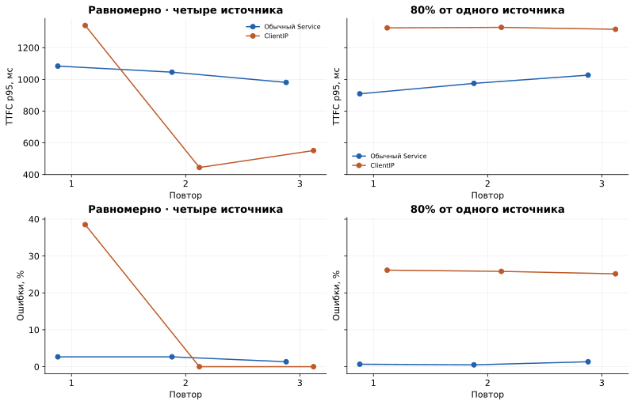
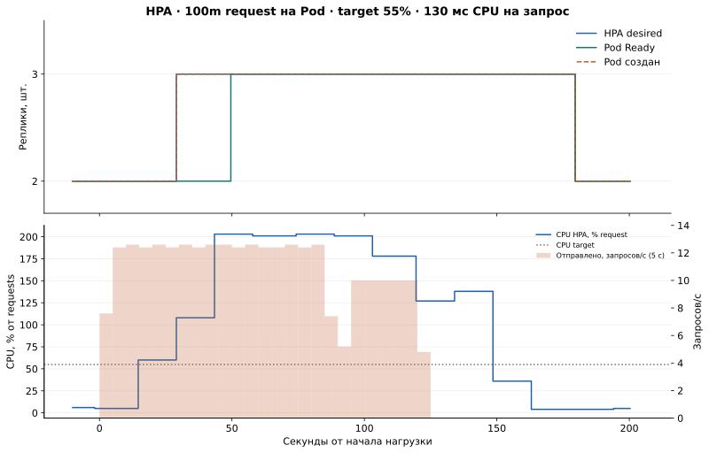

Стенд
macOS arm64, Colima/VZ, Docker Server 29.5.2, kind 0.27.0, Kubernetes 1.32.2, Helm 3.17.3. Перед запуском на диске было 322 GiB свободно. Контейнерная VM получила 4 vCPU и 5 GiB RAM. В отдельном профиле настроен диск 20 GiB.
Две рабочие реплики, лимиты каждого Pod API 500m CPU и 192 MiB RAM, requests 100m и 80 MiB. Встроенный файл A/B лежит в immutable ConfigMap, имя включает префикс SHA. Содержимое проверяется до прогрева. Код и хеши зависимостей поставляются с Dockerfile. Артефакт восстанавливается из ConfigMap при каждом старте. Для настоящих весов вариант доставки — версионированный ключ в объектном хранилище и подписанный манифест с SHA. Каждая реплика может получить тот же артефакт в собственный ограниченный том. Размещение на разных узлах не зависит от совместного подключения RWO. Проверка контрольной суммы и прогрев остаются условиями Ready.
Фактические размеры стенда после экспериментов: база контейнеров на узле 2.4G, kubelet 33M, etcd 127M, журналы Pod 1.9M. Инвентарь содержит размер Docker-образов и их идентификаторы. Размер образов в Docker image inspect и распакованные snapshot в containerd учитываются раздельно. Prometheus хранит до 6 ч / 96 MB TSDB-блоков, volume ограничен 256 MiB. Grafana хранит данные в emptyDir 96 MiB. Поставлены Prometheus 3.3.1, Grafana 11.6.1, kube-state-metrics 2.15.0, Metrics Server 0.8.0.
./lab.sh up разворачивает стенд, ./lab.sh down удаляет только кластер hw11 и его локальный образ. Удаление отдельной VM по команде colima delete hw11. Инструкция · Окружение до запуска · Размеры · Дайджесты образов на узле.
10 проверок сохранено в журнале. Первые три утверждения проверяют ответы реальных HTTP-вызовов из Kubernetes: доступ во время прогрева, версию после отката и замену Pod. Ещё два утверждения проверяют отказ и обрыв, затем изоляцию диалогов на одной новой реплике. Live smoke обращается к ClusterIP с четырёх IP.
A. Прогрев, rollout и откат
Гипотеза. Проверка HTTP в роли readiness допускает прогревающийся процесс в EndpointSlice. При завершении старого Pod активный поток должен пережить штатное обновление благодаря запасу по длительности.
Два прогона по 96 запросов, 3 запросов/с, одинаковые реплики, расписание, A и 20 секунд прогрева. В дефектной ревизии оба probe используют /health. Клиент дождался ответа от непрогретого backend в 54 случаях. В исправленной оба probe используют /ready; подтверждённых запросов до прогрева 0. Liveness продолжает проверять /health. Startup откладывает остальные проверки и допускает до 50 проверок раз в секунду. Readiness обратимо закрывает приём через Service во время drain. Поле warmed замеряется на входе запроса.

Нулевой момент — начало upgrade. EndpointSlice и Ready снимались примерно раз в секунду. Точки в первом ряду показывают подтверждённые запросы до прогрева. Короткие расхождения линий отражают разные контроллеры и дискретность съёма.
Штатный выпуск B проверен с фоновым профилем 0,5 запроса/с в течение 55 с и тремя длинными потоками. Он использует maxSurge: 1, maxUnavailable: 0, minReadySeconds: 2. Первый длинный поток A начался за 1.55 с до команды и завершился через 7.82 с после неё. Ещё два потока запущены на старых репликах непосредственно по Pod IP. Журналы зафиксировали 1 входов в drain с активным запросом. Hook выключает readiness и даёт 3 секунды на распространение EndpointSlice. Uvicorn завершает активные запросы в пределах следующих 25 секунд, при общем grace period 35 секунд.
| Pod B | Появление, с | Ready, с | От создания до Ready, с |
|---|
| inference-6698d6bb6b-gj2tq | 23.2 | 45.2 | 22.0 |
| inference-6698d6bb6b-rhwc7 | 0.2 | 21.7 | 21.6 |
Первый откат прервался на ConfigMap: версия A физически осталась в namespace по аннотации keep, но исчезла из активного манифеста Helm. Helm 3.17.3 не смог сопоставить её с предыдущим ресурсом релиза. В окончательном чарте обе immutable ConfigMap объявлены в каждой ревизии, а Deployment выбирает нужный mount и SHA. После этого опыт неготовой B и откат проведены повторно. Параметры Service, probes, CPU-имитатора и rollout остались прежними. Первоначальная ошибка в истории Helm.
После возврата к исправленной A новая B получила намеренно неверный ожидаемый SHA-256. В журнале она зафиксировала artifact SHA-256 mismatch. У неё отсутствовал Ready endpoint, все 50 попыток шли на A. helm rollback к ревизии 9 восстановил конфигурацию A. Клиент подтвердил версию и SHA-256 cf5e4581e9d431174bcc10737cc459929f286970d10b65bd3194bc75095bac5f. Фактический SHA-256 B в штатном выпуске 1cbb94f1fe41491511d8ab6898934aa2e0605e562a038117d1c06fc5c250f9f7.
Для принудительного отказа после первого фрагмента запустили crictl stop --timeout 0 внутри узла kind. Клиент успел получить HTTP 200 и 1/12 частей, финального маркера нет. Первый замер NotReady через 1.1 с, повторный Ready того же Pod с увеличенным restartCount через 23.7 с. Попытки через Service продолжают идти по живым endpoints, клиентских повторов нет. Затем удалили Pod и дождались новой реплики. Контрольный диалог вернулся с inference-7d85f8b8df-2ttlq на inference-7d85f8b8df-lxd4j с тем же SHA, история из запроса. Диалоги ALPHA и BETA вернули только собственные маркеры.
| Сценарий | План / отправлено | Завершено¹ / OK | 429 | 5xx | Оборвано | Timeout | Ошибки / timeout, % | TTFC p50/p95, мс (n) | Весь ответ p50/p95, мс (n) | Inter-chunk p50/p95, мс (n) |
|---|
| Дефектный прогрев | 96 / 96 | 96 / 96 | 0 | 0 | 0 | 0 | 0.0 / 0.0 | 184 / 454 (96) | 308 / 578 (96) | 61 / 63 (192) |
| Исправленный прогрев | 96 / 96 | 96 / 96 | 0 | 0 | 0 | 0 | 0.0 / 0.0 | 185 / 448 (96) | 308 / 572 (96) | 61 / 63 (192) |
| Полный штатный A → B | 30 / 30 | 30 / 29 | 1 | 0 | 0 | 0 | 3.3 / 0.0 | 446 / 9016 (29) | 570 / 11035 (29) | 62 / 1002 (85) |
| Невалидная B | 50 / 50 | 50 / 50 | 0 | 0 | 0 | 0 | 0.0 / 0.0 | 185 / 192 (50) | 308 / 315 (50) | 61 / 63 (100) |
| Ответы после отката | 16 / 16 | 16 / 16 | 0 | 0 | 0 | 0 | 0.0 / 0.0 | 186 / 445 (16) | 308 / 568 (16) | 61 / 62 (32) |
| Принудительно остановленный поток | 1 / 1 | 1 / 0 | 0 | 0 | 1 | 0 | 100.0 / 0.0 | — | — | — |
| Фоновый Service во время отказа | 84 / 84 | 84 / 82 | 0 | 0 | 2 | 0 | 2.4 / 0.0 | 221 / 448 (82) | 343 / 573 (82) | 61 / 64 (164) |
¹ Терминальная попытка включает ошибку, отказ, обрыв и просрочку. Полный rollout включает 30 попыток, включая три явно выделенных длинных потока. Ноль 5xx, тайм-аутов и незавершённых потоков. HTTP 429 (1) учитывается отдельно, такой запрос отклонён до начала выдачи фрагментов. Тест на резкое завершение учитывается отдельной попыткой.
Ready и EndpointSlice · События и времена · Журнал Pod · Журнал остановленного процесса
B. Привязка и перегрузка одной реплики
Гипотеза. ClientIP может чаще переиспользовать локальные префиксы, но при доминирующем IP очередь этой реплики определяет TTFC. Для CPU-опыта выбран обычный ClusterIP Service с sessionAffinity: None. Вторая политика использует ClientIP с тайм-аутом 60 с над теми же Pod и selector.
12 прогонов. Для каждой из четырёх комбинаций три повтора по 120 с, 600 строк, по 5 запросов/с. Равномерное распределение по 150, горячий профиль 480/40/40/40. Четыре клиентских Pod в одной сети kind, kube-proxy в режиме iptables. Conntrack распределяет новые TCP-соединения. Клиент задаёт Connection: close, HTTP keep-alive и повторы отключены. IP у Pod совпадает с client_ip сервера. Пары отличаются hostname; содержимое payload, длины и запланированные времена совпадают. К началу каждого опыта оба Pod Ready, кеши очищены независимо через localhost. Средний повтор меняет порядок политик. Активные записи ClientIP живут до 60 с без обращений. В смежных прогонах через ClientIP записи могли сохраниться, это видно по трассам IP → Pod.
Один активный запрос и три места ожидания на Pod. LRU хранит 8 префиксов, общий набор из четырёх популярных ключей и новый холодный ключ в каждой 13-й позиции. Цена hit/miss 180/440 мс, после первой части две очередные части каждые 60 мс, CPU burn выключен. При полном буфере HTTP 429 возвращается сразу. Максимальная задержка запуска клиента относительно плана за 12 прогонов 31.9 мс. Запланированные и фактические времена приложены.

Опыт b-hot-affinity-1. TTFC измерен на клиенте, ожидание очереди передано сервером в первом фрагменте.
| Pod | Все попытки | 429 | TTFC p50/p95, мс (n) | Очередь p50/p95, мс (n) |
|---|
| inference-7d85f8b8df-8rjt6 | 520 | 157 | 1044 / 1345 (363) | 834 / 1124 (363) |
| inference-7d85f8b8df-drdtl | 80 | 0 | 186 / 446 (80) | 1 / 1 (80) |
В 05:24:37 UTC у inference-7d85f8b8df-8rjt6 в очереди 1, у inference-7d85f8b8df-drdtl одновременно running=0 и waiting=0. Найдено 40 таких срезов. При сравнении полезен и случай без явного перекоса: в b-even-affinity-2 трасса распределила запросы inference-7d85f8b8df-8rjt6: 300, inference-7d85f8b8df-drdtl: 300. В обычном Service новые соединения могут менять Pod даже от того же IP. В ClientIP распределение определяется тем, куда попали конкретные IP; четыре клиента сами по себе гарантий 50/50 не дают.

Результаты всех трёх повторов по каждой политике. p95 рассчитана по успешным ответам. Доля ошибок включает отказанные запросы.
Горячий профиль, переход ClientIP → обычный Service.
| Повтор | ClientIP TTFC p50/p95, мс (n) | Plain TTFC p50/p95, мс (n) | Ошибки, % | Cache hit среди успехов, % |
|---|
| 1 | 999 / 1325 (443) | 391 / 909 (596) | 26.2 → 0.7 | 89.2 → 90.8 |
| 2 | 997 / 1328 (445) | 392 / 975 (597) | 25.8 → 0.5 | 89.9 → 90.8 |
| 3 | 982 / 1316 (449) | 396 / 1027 (592) | 25.2 → 1.3 | 91.1 → 90.9 |
Переключение на обычный Service распределяет запросы от горячего IP между двумя очередями. Цена решения — отсутствует явная маршрутизация по префиксу. Общий рабочий набор помещается в оба локальных кеша имитатора. На inference engine нужно отдельно измерить выигрыш KV-кеша, prefill для разных длин, очереди continuous batching, скорость выдачи токенов, использование памяти и простои при горячем контексте.
| Сценарий | План / отправлено | Завершено¹ / OK | 429 | 5xx | Оборвано | Timeout | Ошибки / timeout, % | TTFC p50/p95, мс (n) | Весь ответ p50/p95, мс (n) | Inter-chunk p50/p95, мс (n) |
|---|
| b-even-plain-1 | 600 / 600 | 600 / 584 | 16 | 0 | 0 | 0 | 2.7 / 0.0 | 392 / 1084 (584) | 515 / 1206 (584) | 61 / 64 (1168) |
| b-even-plain-2 | 600 / 600 | 600 / 584 | 16 | 0 | 0 | 0 | 2.7 / 0.0 | 397 / 1046 (584) | 521 / 1169 (584) | 61 / 63 (1168) |
| b-even-plain-3 | 600 / 600 | 600 / 592 | 8 | 0 | 0 | 0 | 1.3 / 0.0 | 394 / 981 (592) | 518 / 1103 (592) | 61 / 63 (1184) |
| b-even-affinity-1 | 600 / 600 | 600 / 369 | 231 | 0 | 0 | 0 | 38.5 / 0.0 | 1051 / 1340 (369) | 1174 / 1463 (369) | 61 / 64 (738) |
| b-even-affinity-2 | 600 / 600 | 600 / 600 | 0 | 0 | 0 | 0 | 0.0 / 0.0 | 185 / 445 (600) | 309 / 568 (600) | 61 / 63 (1200) |
| b-even-affinity-3 | 600 / 600 | 600 / 600 | 0 | 0 | 0 | 0 | 0.0 / 0.0 | 289 / 551 (600) | 412 / 675 (600) | 61 / 63 (1200) |
| b-hot-plain-1 | 600 / 600 | 600 / 596 | 4 | 0 | 0 | 0 | 0.7 / 0.0 | 391 / 909 (596) | 515 / 1032 (596) | 61 / 63 (1192) |
| b-hot-plain-2 | 600 / 600 | 600 / 597 | 3 | 0 | 0 | 0 | 0.5 / 0.0 | 392 / 975 (597) | 515 / 1097 (597) | 61 / 63 (1194) |
| b-hot-plain-3 | 600 / 600 | 600 / 592 | 8 | 0 | 0 | 0 | 1.3 / 0.0 | 396 / 1027 (592) | 520 / 1149 (592) | 61 / 63 (1184) |
| b-hot-affinity-1 | 600 / 600 | 600 / 443 | 157 | 0 | 0 | 0 | 26.2 / 0.0 | 999 / 1325 (443) | 1124 / 1447 (443) | 61 / 63 (886) |
| b-hot-affinity-2 | 600 / 600 | 600 / 445 | 155 | 0 | 0 | 0 | 25.8 / 0.0 | 997 / 1328 (445) | 1120 / 1452 (445) | 61 / 63 (890) |
| b-hot-affinity-3 | 600 / 600 | 600 / 449 | 151 | 0 | 0 | 0 | 25.2 / 0.0 | 982 / 1316 (449) | 1105 / 1440 (449) | 61 / 63 (898) |
Трасса IP → Pod по всем двенадцати прогонам
| Прогон | IP источника | Распределение попыток |
|---|
| b-even-plain-1 | 10.244.0.12 | inference-7d85f8b8df-8rjt6: 75, inference-7d85f8b8df-drdtl: 75 |
| b-even-plain-1 | 10.244.0.13 | inference-7d85f8b8df-8rjt6: 86, inference-7d85f8b8df-drdtl: 64 |
| b-even-plain-1 | 10.244.0.14 | inference-7d85f8b8df-8rjt6: 64, inference-7d85f8b8df-drdtl: 86 |
| b-even-plain-1 | 10.244.0.15 | inference-7d85f8b8df-8rjt6: 70, inference-7d85f8b8df-drdtl: 80 |
| b-even-plain-2 | 10.244.0.12 | inference-7d85f8b8df-8rjt6: 67, inference-7d85f8b8df-drdtl: 83 |
| b-even-plain-2 | 10.244.0.13 | inference-7d85f8b8df-8rjt6: 80, inference-7d85f8b8df-drdtl: 70 |
| b-even-plain-2 | 10.244.0.14 | inference-7d85f8b8df-8rjt6: 76, inference-7d85f8b8df-drdtl: 74 |
| b-even-plain-2 | 10.244.0.15 | inference-7d85f8b8df-8rjt6: 79, inference-7d85f8b8df-drdtl: 71 |
| b-even-plain-3 | 10.244.0.12 | inference-7d85f8b8df-8rjt6: 79, inference-7d85f8b8df-drdtl: 71 |
| b-even-plain-3 | 10.244.0.13 | inference-7d85f8b8df-8rjt6: 68, inference-7d85f8b8df-drdtl: 82 |
| b-even-plain-3 | 10.244.0.14 | inference-7d85f8b8df-8rjt6: 74, inference-7d85f8b8df-drdtl: 76 |
| b-even-plain-3 | 10.244.0.15 | inference-7d85f8b8df-8rjt6: 75, inference-7d85f8b8df-drdtl: 75 |
| b-even-affinity-1 | 10.244.0.12 | inference-7d85f8b8df-8rjt6: 150 |
| b-even-affinity-1 | 10.244.0.13 | inference-7d85f8b8df-8rjt6: 150 |
| b-even-affinity-1 | 10.244.0.14 | inference-7d85f8b8df-8rjt6: 150 |
| b-even-affinity-1 | 10.244.0.15 | inference-7d85f8b8df-8rjt6: 150 |
| b-even-affinity-2 | 10.244.0.12 | inference-7d85f8b8df-8rjt6: 150 |
| b-even-affinity-2 | 10.244.0.13 | inference-7d85f8b8df-drdtl: 150 |
| b-even-affinity-2 | 10.244.0.14 | inference-7d85f8b8df-8rjt6: 150 |
| b-even-affinity-2 | 10.244.0.15 | inference-7d85f8b8df-drdtl: 150 |
| b-even-affinity-3 | 10.244.0.12 | inference-7d85f8b8df-drdtl: 150 |
| b-even-affinity-3 | 10.244.0.13 | inference-7d85f8b8df-drdtl: 150 |
| b-even-affinity-3 | 10.244.0.14 | inference-7d85f8b8df-8rjt6: 150 |
| b-even-affinity-3 | 10.244.0.15 | inference-7d85f8b8df-8rjt6: 150 |
| b-hot-plain-1 | 10.244.0.12 | inference-7d85f8b8df-8rjt6: 231, inference-7d85f8b8df-drdtl: 249 |
| b-hot-plain-1 | 10.244.0.13 | inference-7d85f8b8df-8rjt6: 16, inference-7d85f8b8df-drdtl: 24 |
| b-hot-plain-1 | 10.244.0.14 | inference-7d85f8b8df-8rjt6: 21, inference-7d85f8b8df-drdtl: 19 |
| b-hot-plain-1 | 10.244.0.15 | inference-7d85f8b8df-8rjt6: 23, inference-7d85f8b8df-drdtl: 17 |
| b-hot-plain-2 | 10.244.0.12 | inference-7d85f8b8df-8rjt6: 232, inference-7d85f8b8df-drdtl: 248 |
| b-hot-plain-2 | 10.244.0.13 | inference-7d85f8b8df-8rjt6: 17, inference-7d85f8b8df-drdtl: 23 |
| b-hot-plain-2 | 10.244.0.14 | inference-7d85f8b8df-8rjt6: 18, inference-7d85f8b8df-drdtl: 22 |
| b-hot-plain-2 | 10.244.0.15 | inference-7d85f8b8df-8rjt6: 19, inference-7d85f8b8df-drdtl: 21 |
| b-hot-plain-3 | 10.244.0.12 | inference-7d85f8b8df-8rjt6: 233, inference-7d85f8b8df-drdtl: 247 |
| b-hot-plain-3 | 10.244.0.13 | inference-7d85f8b8df-8rjt6: 17, inference-7d85f8b8df-drdtl: 23 |
| b-hot-plain-3 | 10.244.0.14 | inference-7d85f8b8df-8rjt6: 16, inference-7d85f8b8df-drdtl: 24 |
| b-hot-plain-3 | 10.244.0.15 | inference-7d85f8b8df-8rjt6: 23, inference-7d85f8b8df-drdtl: 17 |
| b-hot-affinity-1 | 10.244.0.12 | inference-7d85f8b8df-8rjt6: 480 |
| b-hot-affinity-1 | 10.244.0.13 | inference-7d85f8b8df-drdtl: 40 |
| b-hot-affinity-1 | 10.244.0.14 | inference-7d85f8b8df-8rjt6: 40 |
| b-hot-affinity-1 | 10.244.0.15 | inference-7d85f8b8df-drdtl: 40 |
| b-hot-affinity-2 | 10.244.0.12 | inference-7d85f8b8df-drdtl: 480 |
| b-hot-affinity-2 | 10.244.0.13 | inference-7d85f8b8df-8rjt6: 40 |
| b-hot-affinity-2 | 10.244.0.14 | inference-7d85f8b8df-drdtl: 40 |
| b-hot-affinity-2 | 10.244.0.15 | inference-7d85f8b8df-8rjt6: 40 |
| b-hot-affinity-3 | 10.244.0.12 | inference-7d85f8b8df-drdtl: 480 |
| b-hot-affinity-3 | 10.244.0.13 | inference-7d85f8b8df-8rjt6: 40 |
| b-hot-affinity-3 | 10.244.0.14 | inference-7d85f8b8df-drdtl: 40 |
| b-hot-affinity-3 | 10.244.0.15 | inference-7d85f8b8df-8rjt6: 40 |
4 IP Pod · Два Service · kube-proxy · Показания running/waiting с обоих Pod
C. HPA и алерты
Гипотеза. HPA реагирует на CPU, но маршрутизация ClientIP сохраняет горячую очередь и после масштабирования. У каждого контейнера API есть requests.cpu=100m. autoscaling/v2 держит диапазон 2–3 и средний target 55%. Ресурсные метрики получены через metrics.k8s.io/v1beta1; источник — Metrics Server.
До увеличения нагрузки каждый из четырёх IP получил привязку к одному из исходных Pod через ClientIP. Во время опыта поддерживали эти привязки с частотой 0,5 запроса/с суммарно. На обычный Service подали 12 запросов/с на 86 секунд, с 130 мс работы CPU на принятый запрос и интервалом частей 120 мс. Пиковая измеренная HPA загрузка 203% от requests. Третий Pod увидели через 29.0 с от начала основного опыта, Ready через 49.6 с. Разница 20.6 с включает запуск и прогрев. После Ready обычный Service распределил попытки так: {'inference-7d85f8b8df-ntzzq': 180, 'inference-7d85f8b8df-rbnq4': 137, 'inference-7d85f8b8df-kh2bt': 144}.

Поступление нагрузки, средний CPU HPA, количество созданных и Ready Pod. Основной CPU-трафик сменяется 30-секундным профилем ClientIP.
Следом подали 10 запросов/с на ClientIP, 80% от client-0, в течение 30 с начиная с +92.4 с. Попытки по Pod: {'inference-7d85f8b8df-ntzzq': 60, 'inference-7d85f8b8df-kh2bt': 240}. Третий Pod получил 0 из 300 попыток. Горячий клиент переиспользует привязку 60 с; новая реплика получает только выбранные для неё IP. При одинаковых CPU requests среднее двух Pod приблизительно (u₁ + u₂) / 2. Один горячий Pod при почти нулевой загрузке второго должен устойчиво превышать примерно 110% CPU request, плюс запас на допуск контроллера и дискретность. Очередь при I/O-ожидании CPU почти не нагружает. Поэтому CPU HPA дополняет маршрутизацию, а для настоящего inference важны также очередь и доступные ресурсы ускорителя.
| IP клиента | Исходный Pod ClientIP | Попытки на исходном Pod после scale-up |
|---|
| 10.244.0.12 | inference-7d85f8b8df-kh2bt | 240 |
| 10.244.0.13 | inference-7d85f8b8df-ntzzq | 20 |
| 10.244.0.14 | inference-7d85f8b8df-ntzzq | 20 |
| 10.244.0.15 | inference-7d85f8b8df-ntzzq | 20 |
Downscale stabilization задан 45 с. После последней фазы нагрузки desired стал 2 через 54.8 с, а оба Pod Ready и лишний исчез через 58.0 с. В реальное время входят окно Метрик, опрос HPA, preStop и завершение Pod.
| Сценарий | План / отправлено | Завершено¹ / OK | 429 | 5xx | Оборвано | Timeout | Ошибки / timeout, % | TTFC p50/p95, мс (n) | Весь ответ p50/p95, мс (n) | Inter-chunk p50/p95, мс (n) |
|---|
| c-hpa | 1032 / 1032 | 1032 / 317 | 715 | 0 | 0 | 0 | 69.3 / 0.0 | 2264 / 2580 (317) | 2507 / 2823 (317) | 121 / 123 (634) |
| c-hpa-hot | 300 / 300 | 300 / 97 | 203 | 0 | 0 | 0 | 67.7 / 0.0 | 2258 / 2358 (97) | 2502 / 2602 (97) | 121 / 123 (194) |
Два алерта
Окно 24 с, evaluation interval 3 с, удержание 12 с. FirstChunkSlow требует TTFC p95 >850 мс при ≥20 успешных. RequestFailures требует >10% отказов и ошибок при ≥20 терминальных исходах. Prometheus скрейпит каждый Pod напрямую через discovery, включая фазу прогрева. Состояния pending, firing и отсутствие после спада получены через /api/v1/alerts.
| Алерт | Состояние | Время | Секунды от нагрузки |
|---|
| FirstChunkSlow | inactive | 05:51:52 UTC | -10.1 |
| FirstChunkSlow | pending | 05:52:13 UTC | +10.5 |
| FirstChunkSlow | firing | 05:52:25 UTC | +22.9 |
| FirstChunkSlow | inactive | 05:54:25 UTC | +142.3 |
| RequestFailures | inactive | 05:51:52 UTC | -10.1 |
| RequestFailures | pending | 05:52:11 UTC | +8.5 |
| RequestFailures | firing | 05:52:23 UTC | +20.8 |
| RequestFailures | inactive | 05:54:29 UTC | +146.5 |
HPA и CPU target · Resource Metrics API · CPU, RSS, running/waiting и алерты · Экспорт Grafana
Как считались задержки
Клиенты фиксируют scheduled_ns, sent_ns, first_ns, ended_ns на монотонных часах, ns. Отправка отмечается непосредственно перед HTTP-вызовом и включает открытие TCP-соединения. Общий эпохальный якорь синхронизирует отправку из четырёх Pod одного узла. TTFC = первый содержательный NDJSON-фрагмент − отправка. Inter-chunk latency — последовательные разности между содержательными частями. Время полного ответа — до закрытия HTTP-тела. Успех требует ожидаемого числа частей и маркера done. Для каждого запроса сохраняются payload, ID, IP, Pod, версия, SHA, warmed, статус, исход, очередь и интервалы. Разовый сокетный timeout 16 с применяется к отдельной операции чтения.
Для реальной модели TTFT определялся бы от отправки до прихода первого содержательного токена, TPOT = (t последнего токена − t первого) / (N−1). N — число фактически выданных токенов по token IDs сервера, без токенов запроса и служебных маркеров. Для N=1 TPOT отсутствует. Tokens/s для участка decode = (N−1)/(t последнего − t первого). Здесь измерялись только части имитатора.
Сервер наблюдает histogram для успешных TTFC, полного ответа и ожидания, bucket-границы от 0,01 до 25 с. Источник интервалов в отдельной histogram — все выданные фрагменты. Пример PromQL для интервала одного полного прогона B с запасом на последнее чтение:
histogram_quantile(0.95, sum by (le) (increase(hw11_ttfc_seconds_bucket[127s])))
Используется сумма по le двух Pod, для разреза сохраняется (le,pod). Для сверки за тот же набор запросов вычислили точную разность bucket-счётчиков на срезах до/после. Между срезами работает только один генератор. Количество по +Inf сверено с клиентским числом успехов. P95 из bucket интерполируется внутри интервала; клиентский p95 вычислен из времён успешных попыток, с линейной интерполяцией между соседними наблюдениями. Разницу дают границы bucket, путь HTTP и экстраполяция increase() по дискретным scrape-точкам.
| Прогон | Клиент n | Histogram n | Клиент p95, мс | Bucket delta p95, мс | PromQL p95, мс |
|---|
| b-even-plain-1 | 584 | 584 | 1083.7 | 1089.4 | 1089.3 |
| b-even-plain-2 | 584 | 584 | 1045.6 | 1060.7 | 1061.2 |
| b-even-plain-3 | 592 | 592 | 980.9 | 962.8 | 962.8 |
| b-even-affinity-1 | 369 | 369 | 1340.0 | 1434.3 | 1434.3 |
| b-even-affinity-2 | 600 | 600 | 444.5 | 452.9 | 452.9 |
| b-even-affinity-3 | 600 | 600 | 551.5 | 552.1 | 552.1 |
| b-hot-plain-1 | 596 | 596 | 909.1 | 921.0 | 921.0 |
| b-hot-plain-2 | 597 | 597 | 974.9 | 948.5 | 949.3 |
| b-hot-plain-3 | 592 | 592 | 1027.0 | 1057.1 | 1057.1 |
| b-hot-affinity-1 | 443 | 443 | 1324.8 | 1419.1 | 1419.1 |
| b-hot-affinity-2 | 445 | 445 | 1328.0 | 1413.8 | 1413.7 |
| b-hot-affinity-3 | 449 | 449 | 1316.0 | 1397.5 | 1397.5 |
Дашборд показывает TTFC, полное время, inter-chunk, текущие running/waiting, завершённые запросы, ошибки и отказы, CPU и RSS Python-процессов и число Ready по kube-state-metrics. CPU контейнера для HPA взят из resource metrics, отдельно от CPU процесса. Метки метрик ограничены именем Pod и конечными наборами исходов/результатов кеша. Request ID и session ID остаются в журнале. Принудительное убийство может завершить процесс до отправки финальной метрики, поэтому обрыв подтверждает клиент.
Запросы JSONL · Цели Prometheus · Histogram в документации Prometheus
Ревью PR · привязка диалога к Pod
При исходных оценках новый запрос отправил бы на B. Доплата за холодный prefill 0,8 с меньше 3 с очереди A. Проверяю лимиты B по активным запросам и KV-памяти, его Ready, допустимую версию и предсказанный TTFT c deadline. Сравниваю прогноз CPU/GPU и очередь в секундах, длину входа и ожидаемый cache hit на каждом Pod. Счётчик ожидающих без размеров prefill и decode плохо предсказывает время ожидания. Нужны p95 TTFT с разбивкой по длине, погрешность прогноза, доля попаданий, насыщение и отказы. При равном прогнозе отдаю предпочтение кешу. При исчерпании бюджета времени или очереди возвращаю ограниченный отказ с явной политикой повтора.
Историю и идентификатор диалога клиент присылает вместе с запросом либо читает из стойкого общего хранилища. После потери A готовая совместимая реплика пересчитывает контекст по этому источнику. Уже начатый поток закреплён за тем соединением и версией, где начался. При штатном rollout его обслуживает прежняя реплика до конца. При падении фиксирую частичный результат и отдельный повтор с тем же логическим ID и новым ID попытки. Клиент решает, заменить ли частичный вывод. Для инструментальных вызовов отдельно нужны идемпотентные ключи, чтобы не выполнить побочный эффект дважды.
Кейс Google из слайда 070. GKE Inference Gateway учитывает очереди и локальность префикса. Google сообщает о росте cache hit с 35% до 70% и снижении p95 TTFT на 52% для DeepSeek V3.1 на всплесках чатов. Здесь у выбора похожий критерий, а числа получены только на лабораторной модели нагрузки. Первичный источник Google Cloud.
Ещё один цикл на настоящем inference engine должен включить неравные длины prefill, реальные токены decode, отличающиеся размеры KV, истечение cache hit и отказ во время потока. CPU-имитатор покрывает проверяемость маршрутизации, Kubernetes и измерений. Один узел ограничивает интерпретацию сетевых и отказных эффектов. Клиенты открывают новые соединения, поэтому баланс для длинных keep-alive и HTTP/2 нужно измерить отдельно.